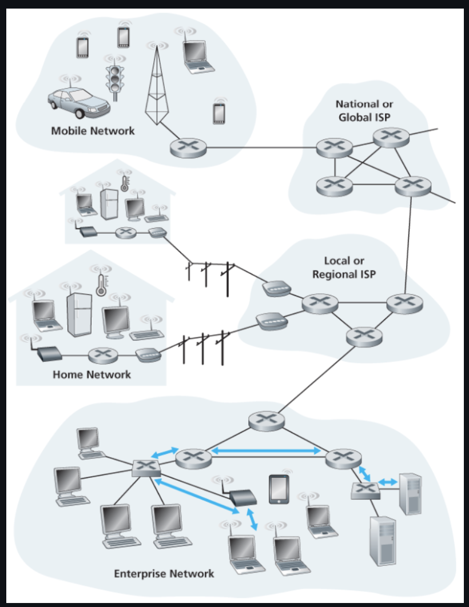
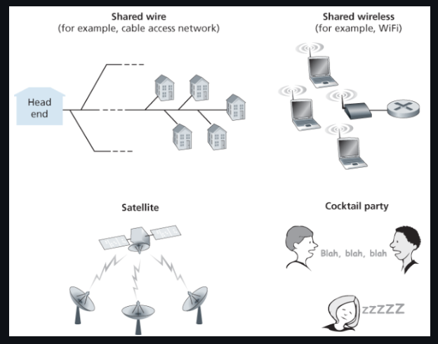
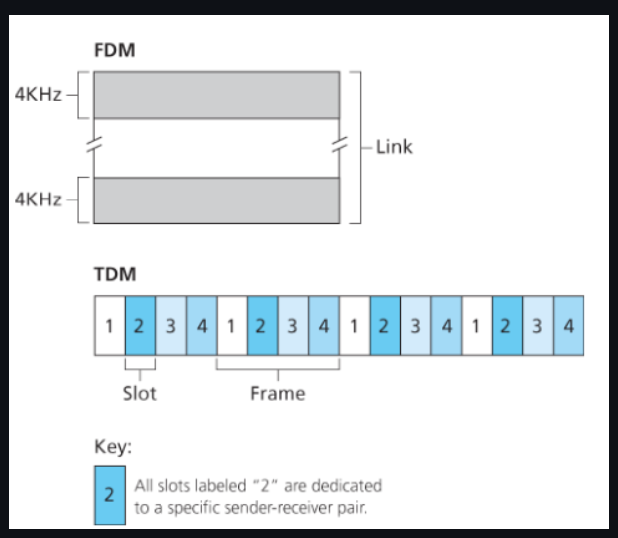
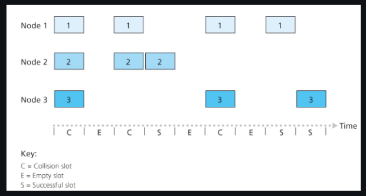
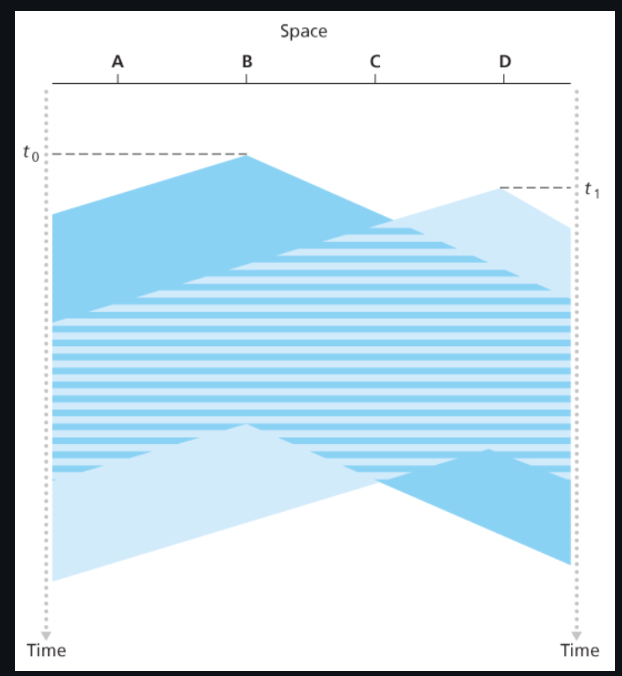
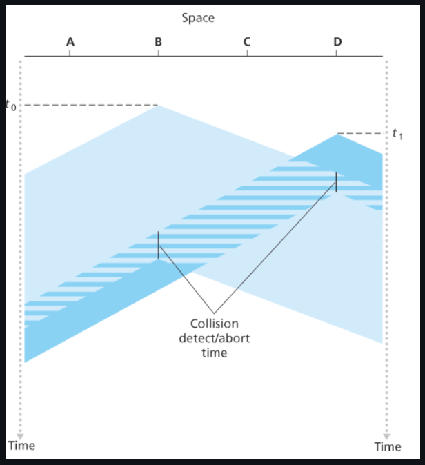
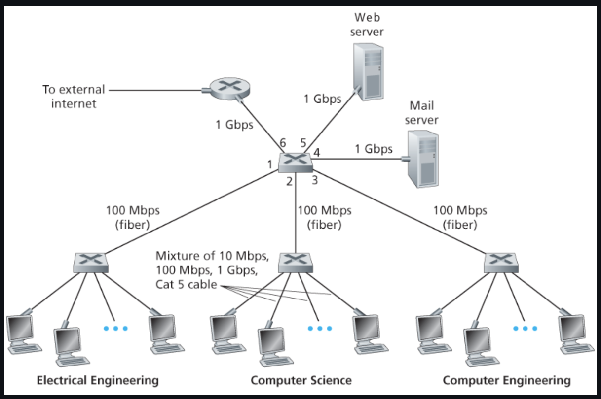
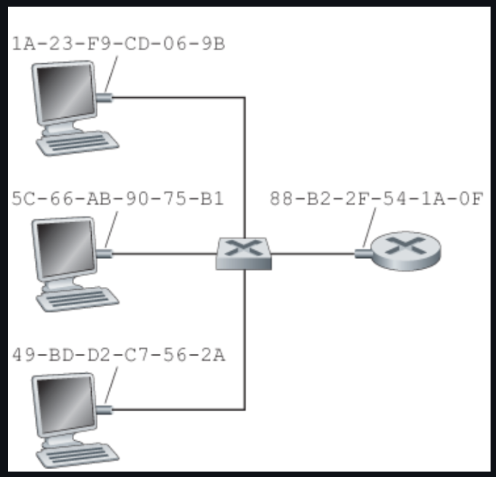
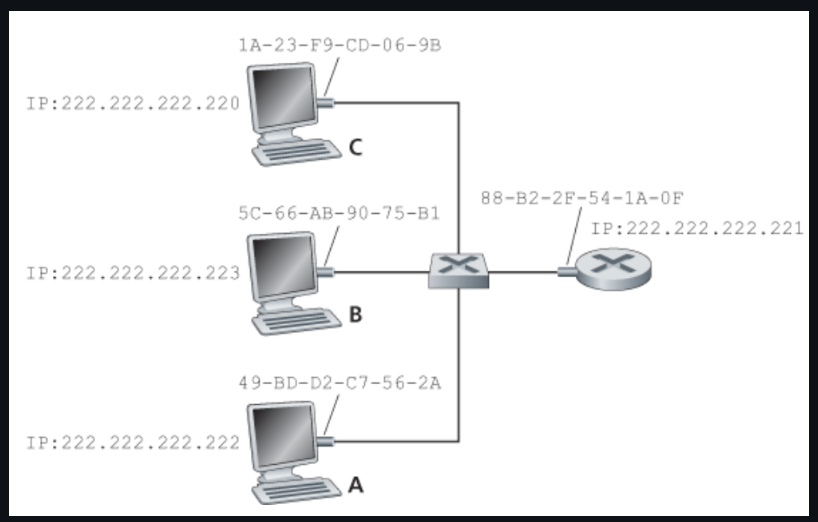

링크 계층 소개

노드
링크 계층 프로토콜을 실행하는 장치
e.g. 호스트, 라우터, 스위치, AP(access point)
링크
통신 경로상의 인접한 노드들을 연결하는 통신 채널
데이터그램을 출발지 호스트에서 목적지 호스트로 이동시키기 위해서는 데이터그램을 종단 간 경로의 개별 링크들로 이동시켜야만 한다.
한 링크에서 전송 노드는 데이터그램을 링크 계층 프레임(link-layer frame)으로 캡슐화해서 링크로 전송한다.
링크 계층이 제공하는 서비스
프레임화(framing)
데이터그램을 링크상으로 전송하기 전에 링크 계층 프레임에 캡슐화한다.
프레임은 데이터그램이 들어있는 데이터필드와 여러 개의 헤더 필드로 구성된다.
링크 접속(link access)
매체 접속 제어(medium access control, MAC) 프로토콜은 링크상으로 프레임을 전송하는 규칙을 명시한다.
단일 송신자와 단일 수신자의 점대점 링크에서의 MAC은 단순하며, 링크가 사용되지 않을 때마다 프레임을 전송할 수 있다.
하나의 브로드캐스트 링크를 여러 노드가 공요하는 경우, MAC 프로토콜은 여러 노드로부터의 프레임 전송을 조정한다.
신뢰적 전달
TCP와 마찬가지로 확인 응답과 재전송을 통해 서비스를 제공한다.
TCP에서는 종단 간에 데이터를 재선송 하는 것과는 달리 링크 계층 프로토콜은 오류가 발생한 링크에서 오류를 정정한다.
무선 링크와 같은 오류율을 가진 링크에서 주로 사용되며, 낮은 비트 오류율을 가진 링크에서는 불필요한 오버헤드가 될 수 있어 대다수 유선 링크 계층 프로토콜은 제공하지 않는다.
오류 검출과 정정
신호의 약화나 전자기 잡음 때문에 전송된 프레임 비트를 반대로 오인할 수 있다.
오류가 있는 데이터그램은 전달할 필요가 없으므로 대부분의 링크 계층 프로토콜은 오류를 검출하는 방법을 제공한다.
송신 노드에서 오류 검출 비트를 설정하게 하고 수신 노드에서 오류 검사를 수행하게 함으로써 가능해진다.
트랜스포트 계층과 네트워크 계층의 오류 검출보다 일반적으로 더 복잡하며, 하드웨어로 구현된다.
오류 정정은 오류 검출과 비슷하지만 프레임의 어느 곳에서 오류가 발생했는지 정확하게 찾아낼 수 있다.
다중 접속 문제(multiple access problem)

모든 노드가 프레임을 전송할 수 있으므로 2개 이상의 노드가 브로드캐스트 채널에서 직접 통신할 수 있고, 이런 일이 발생하면 모든 노드는 동시에 여러 개의 프레임을 받게 된다.
즉, 전송된 프레임들이 각 수신자에서 충돌하게 되고 어떤 수신 노드도 전송된 프레임의 의미를 파악할 수 없게 된다.
따라서 충돌에 관련된 모든 프레임은 손실되며, 다수의 노드가 빈번히 프레임을 전송하려 한다면 많이 충돌할 것이고 따라서 브로드캐스트 채널의 대역폭이 많이 낭비된다.
다중 접속 프로토콜(multiple access protocol)
초당 R 비트의 전송률을 갖는 브로드캐스트 채널에 대한 다중 접속 프로토콜은 다음과 같은 특성을 지니는 것이 바람직하다.
단 하나의 노드가 전송할 데이터가 있을 때는 그 노드가 R bps의 처리율을 갖는다.
M개의 노드가 전송할 데이터가 있을 때는 각 노드가 R/M bps의 처리율을 갖는다.
항상이 아니며 각 노드가 정의된 시간 동안 R/M의 평균 처리율을 가짐을 의미한다.
분산되어 있어 고장으로 인해 전체 시스템을 정지시킬 수 있는 마스터 노드가 없다.
단순해서 구현하는 데 비용이 적게 든다.
채널 분할 프로토콜

시분할 다중화(time-division multiplexing, TDM)
채널이 N개 노드를 지원하고 채널 전송률이 R bps라고 하자.
TDM은 시간을 시간 프레임(time frame)으로 나누고 또한 각 시간 프레임을 N개의 시간 슬롯(time slot)으로 나눈다.
그 후 N개의 노드에게 시간 슬롯을 각각 할당한다.
노드는 전송할 패킷이 있을 때마다 TDM 프레임에서 자신에게 할당된 시간 슬롯 동안 패킷을 전송한다.
장점
충돌을 제거할 수 있다.
매우 공정하다.
단점
전송할 패킷이 있는 노드가 단 하나인 경우에도 노드 전송률이 R/N으로 제한된다.
노드가 전송 순서상 자신의 차례를 항상 기다려야 한다.
주파수 분할 다중화 (frequency-division multiplexing, FDM)
R bps의 채널을 R/N의 대역폭을 갖는 다른 주파수로 나눠서 각 주파수를 N개의 노드 중 하나에게 할당한다.
즉, 하나의 큰 R bps 채널로부터 N개의 R/N bps의 작은 채널을 만든다.
코드 분할 다중 접속(code division multiple access, CDMA)
CDMA는 다른 코드를 각 노드에게 할당한다.
노드는 전송하는 데이터 비트들을 자신의 유일한 코드로 인코딩한다.
장점
CDMA 네트워크에서 코드들을 신중하게 선택하면 여러 노드들이 동시에 전송할 수 있다.
다른 노드들에 의해 전송이 간섭되더라도 각 수신자들이 송신자의 인코딩된 데이터 비트를 정확하게 수신할 수 있다.
랜덤 접속 프로토콜
랜덤 접속 프로토콜에서 전송 노드는 항상 채널의 최대 전송률인 R bps로 전송한다.
충돌이 생기면 충돌과 관련된 각 노드는 프레임이 충돌 없이 전송될 때까지 자신의 프레임을 계속해서 재전송한다.
프레임이 충돌했을 때 즉시 재전송하지 않고, 랜덤 지연 시간 동안 기다린 후 재전송 한다.
즉, 출동했던 노드 중 하나는 다른 노드가 선택한 지연 시간보다 충분히 작은 지연시간을 선택함으로써 충돌 없이 자신의 프레임을 채널로 전송할 수 있다.
슬롯 알로하(slotted ALOHA)

동작 과정
전송할 새 프레임이 있으면 다음 슬롯이 시작할 때까지 기다렸다가 그 슬롯에 전체 프레임을 전송한다.
만약, 충돌하지 않으면 노드는 성공적으로 자신의 프레임을 전송한 것이다. 따라서 그 프레임을 재전송할 필요가 없다.
만약 충돌하면, 노드는 그 슬롯이 끝나기 전에 충돌을 검출한다. 노드는 그 프레임이 충돌 없이 전송될 때까지 확률 p(0~1 사이)로 해당 프레임을 다음 슬롯들에서 재전송한다.
충돌하지 않을 때까지 3번 과정을 반복한다.
장점
하나의 활성노드로 하여금 채널의 전속력 R로 계속해서 프레임을 전송할 수 있도록 허용한다.
노드가 충돌을 감지하고 언제 재전송할지 각자 결정하므로 분산되어있다.
매우 단순하다.
단점
노드는 슬롯이 언제 시작하는지 동기화되어있어야 한다.
활성 노드가 많이 있으면 일부 슬롯이 충돌로 인해 결과적으로 낭비 된다.
모든 활성 노드가 확률적인 전송 정책 때문에 전송을 억제하는 경우 일부 슬롯이 비게 된다.
낭비되지 않는 슬롯은 정확히 한 노드만 전송하는 슬롯이고, 이 노드를 성공한 슬롯(successful slot)이라 한다.
효율성
노드가 N개가 있을 때 하나의 슬롯이 성공적인 슬롯일 확률은 노드들 중 한 노드만 전송하고 나머지 N-1 개의 노드는 전송하지 않는 확률이다.
노드가 전송할 확률이 p라하면 해당 노드가 성공할 확률은 p x (1-p)^(N-1) 이다.
노드가 N개 있으므로 임의의 한 노드가 성공할 확률은 N x p x (1-p)^(N-1) 이다.
최대의 효율을 구하기 위해서는 이 식을 최대화 하는 p를 구해야 한다.
활성 노드가 많은 경우의 최대 효율을 구하기 위해 N이 무한대가 될 때의 극한값을 취한다.
이렇게 계산하면 최대 효율은 p = 1/e = 0.37 임을 알 수있다.
즉, 많은 노드가 전송할 프레임이 많을 때 기껏해야 37%의 슬롯만 낭비되지 않는다.
CSMA
위 두 프로토콜에서는 다른 노드가 전송하고 있건 말건 일단 보낸다.
즉, 충돌이 생기고 결과적으로 효율이 떨어진다.
이러한 충돌을 없애기 위한 규칙을 보자.
캐리어 감지(carrier sensing)
만일 다른 노드가 프레임을 채널로 전송하고 있는 경우, 노드는 임의의 짧은 시간 동안 전송 중단을 감지하면 프레임을 전송하기 시작한다.
충돌 검출(collision detection)
만일 다른 노드가 방해 프레임을 전송하고 있음을 검출하면, 자신의 전송을 중단하고 랜덤 시간 동안 기다린 후 유휴 시 감지 및 전송과정을 반복한다.
CSMA에서 충돌이 발생하는 경우

시각 t0에 노드 B가 다른 노드가 아무도 전송하고 있지 않으므로 채널이 비어 있는 것으로 감지한다.
B는 전송을 시작하고, 전송한 비트들이 브로드캐스트 매체를 따라 양방향으로 전송된다.
시간이 경과함에 따라 아래쪽으로 전파되는 것은 B의 비트들이 실제로 브로드캐스트 매체로 전파할 때 0보다 큰 시간이 필요하다는 것을 의미한다.
D가 t1 시점에 전송할 프레임이 생겼고, 노드 B가 t1에 전송을 하고 있음에도 불구하고, B에 의해 전송되는 비트들은 D에 도달하지 못했고, 따라서 D는 t1일 때 채널이 사용되지 않는 것으로 감지한다.
D가 전송을 시작하고, 약간의 시간 후에 B가 전송한 비트와 D의 전송한 비트가 간섭을 일으키기 시작한다.
즉, 브로드캐스트 채널 종단 간의 채널 전파 지연(channel propagation delay)이 길수록 다른 노드에서 이미 시작된 전송을 캐리어 감지 노드가 감지할 수 없는 경우가 증가하기 때문에 채널 종단 간의 채널 전파 지연(channel propagation delay) 는 CSMA의 성능을 결정하는데 중요한 역할을 한다.
CSMA/CD

CSMA는 충돌 검출을 수행하지 않는 반면, CSMA/CD는 충돌 검출을 수행한 후 즉시 전송을 취소한다.
동작 과정
어댑터는 네트워크 계층으로부터 데이터그램을 받아서 링크 계층 프레임을 만든 후에 그 프레임을 어댑터 버퍼에 저장한다.
어댑터는 채널이 유휴(idle) 상태임을 감지하면 프레임 전송을 시작한다.
만일 어댑터가 채널이 바쁜(busy) 상태임을 감지하면, 어떤 신호 에너지도 감지되지 않을 때까지 더 기다렸다가 프레임을 전송하기 시작한다.
전송하는 동안 어댑터는 브로드캐스트 채널을 사용하는 다른 어댑터로부터의 신호 에너지가 있는지 감시한다.
프레임 전체를 전송하는 동안 다른 어댑터로부터의 신호 에너지가 감지되지 않으면, 프레임 전송을 완료한다.
감지되면 자신의 프레임 전송을 취소한다.
전송 취소 후 임의의 랜덤 시간만큼 기다린 후 2단계로 돌아간다.
만일 랜덤 시간이 아니라 고정 시간이라면 동시에 프레임을 전송했을 때 똑같은 시간을 기다린 후 전송을 하므로 계속해서 충돌하게 된다.
폴링 프로토콜(polling protocol)
노드 중 하나를 마스터 노드로 지정한다.
마스터 노드는 각 노드를 라운드 로빈 방식으로 폴링한다.
특히, 마스터 노드는 먼저 노드 1에게 노드 1이 최대로 보낼 수 있는 프레임 수에 대한 메시지를 전송하고, 노드 1이 프레임을 전부 보낸 다음 다음 노드도 똑같이 수행하여 순환적으로 각 노드를 폴링하는 방식으로 이 과정을 계속한다.
장점
빈슬롯을 제거할 수 있다.
단점
폴링 지연이 있다.
한 노드만 활성이면 활성 노드가 프레임을 최대 개수만큼 보낼 때마다 마스터 노드는 비활성 노드들을 차례로 폴링해야만한다.
마스터 노드가 고장나면 전체 채널이 동작하지 못한다.
토큰 전달 프로토콜(token-passing protocol)
토큰(token) 이라고 알려진 작은 특수 목적 프레임이 정해진 순서대로 노드 간에 전달된다.
예를 들어, 노드 1은 항상 노드 2에 노드 2는 노드 3에 노드 N은 노드 1에 토큰을 전송한다.
노드가 토큰을 수신하면, 전송할 프레임이 있을 때만 토큰을 붙잡고, 그렇지 않으면 토큰을 전달한다.
프레임을 최대 개수까지 전송한 뒤 토큰을 다음 노드로 전달한다.
장점
분산 방식으로 효율이 매우 높다
단점
노드 하나가 실패하면 채널이 동작하지 않는다.
노드가 토큰을 놓아주지 않으면, 토큰이 다시 돌 수 있도록 하는 회복 절차가 수행되어야 한다.

링크 계층 주소체계와 ARP
네트워크 계층 주소와 링크 계층 주소
네트워크 계층 주소 체계가 있는데도 링크 계층 주소를 갖는 이유
랜은 IP와 인터넷만을 위해서가 아니라 임의의 네트워크 계층 프로토콜을 위해 설계되었기 때문이다.
만일 어댑터가 MAC 주소 대신에 네트워크 계층 주소를 사용한다면, 네트워크 계층 주소를 어댑터 RAM에 저장하고 어댑터를 이동할 때마다 재구성해야 한다.
즉, 네트워크 구조에서 계층이 독립적인 구성요소가 되도록 하려면 각 계층은 자신만의 주소 기법을 가져야만 한다.
MAC 주소

실제로 링크 계층 주소를 가진 것은 호스트나 라우터가 아닌 호스트나 라우터의 어댑터(네트워크 인터페이스)다.
즉, 다수의 네트워크 인터페이스를 갖고있으므로 여러 개의 링크 계층 주소를 갖게된다.
그러나 링크 계층 스위치는 호스트와 라우터 간에 데이터그램을 전달하는 일을 하기 때문에 호스트나 라우터를 연결해주는 인터페이스에 링크 계층 주소를 할당받지 않는다.
ARP

네트워크 계층 주소와 링크 계층 주소가 있으므로 이들 주소 사이에 변환을 해주는 프로토콜을 ARP(Address Resolution Protocol) 이라고 한다.
ARP 모듈은 IP와 MAP 주소와 마찬가지로 인터페이스마다 존재한다.
위 그림에서 A에서 C로 데이터그램을 전송하려고 한다고 가정해보자.
데이터그램을 전송하기 위해 목적지 IP 뿐만 아니라 MAC 주소도 주어야만 랜이 적절하게 C로 전달할 수 있다.
송신 호스트 즉, A는 목적지 IP주소를 가진 호스트의 MAC 주소를 알아야하는데 이를 ARP가 해준다.
송신 호스트의 ARP 모듈은 입력값으로서 동일한 랜상의 임의의 IP 주소에 대해 대응되는 MAC 주소를 돌려준다.
이러한 면에서 DNS와 비슷한 면이 있다.
그러나 DNS는 인터넷의 임의의 장소에 있는 호스트의 호스트 네임을 해결하는 반면에, ARP는 동일한 서브넷상에 있는 호스트나 라우터 인터페이스의 IP 주소만을 해결한다.
이더넷
발전 과정
1980년대
이더넷 랜은 노드를 연결하기 위해 동축 버스를 사용했다.
버스 토폴로지의 이더넷은 브로드캐스트 랜으로, 전송되는 모든 프레임은 버스에 연결된 모든 어댑터를 거치며 이들에 의해 처리된다.
1990년대
랜을 허브 기반의 스타 토폴로지를 사용하는 이더넷으로 대체
꼬임쌍선을 사용해서 허브에 직접 연결된다.
허브(hub)는 프레임이 아닌 각각의 비트에 대한 처리를 하는 물리 계층 장치다.
허브(hub) 가 한 인터페이스로 비트를 수신하면 그 비트의 복사본을 다른 모든 인터페이스로 전송한다.
2000년대 초반
중앙의 허브가 스위치(switch)로 대체되었다.
스위치(switch) 는 충돌 없는 장치일 뿐만 아니라 저장-후-전달 패킷 스위치이다.